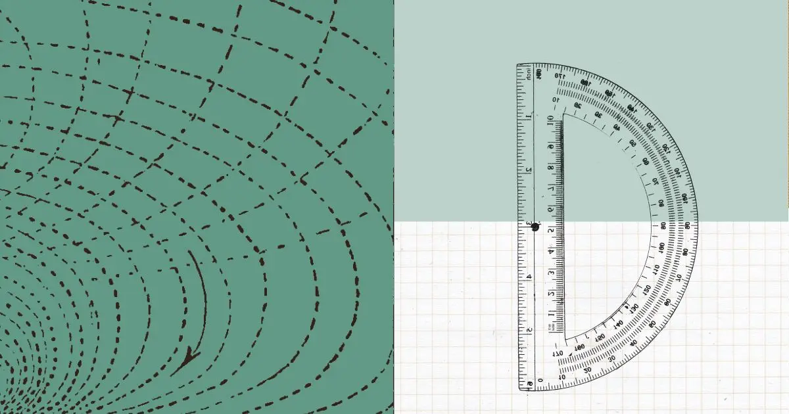
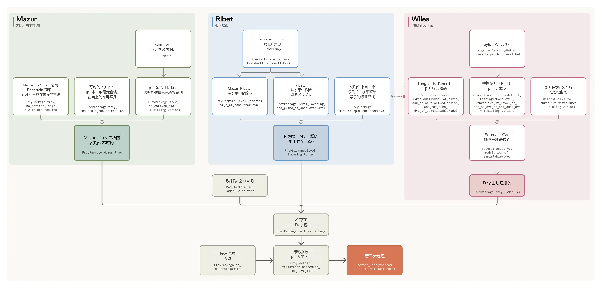
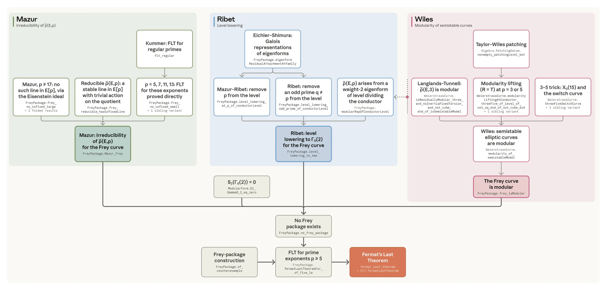

科学（Science） 2026 年 9 月 4 日

我们分享首份完整、经计算机检验的费马大定理证明。Claude 在 11 天内以高度自主的方式工作，用 Lean 编程语言写出了这份证明。下面，我们描述形式化是如何完成的，并分享一些关于这项工作对数学研究意味着什么的思考。大约 1637 年，皮埃尔·德·费马（Pierre de Fermat）在其所藏丢番图（Diophantus）《算术》（Arithmetica）一书的页边写下了后来成为史上最著名的数学猜想之一的断言：对于 n > 2，不存在正整数 a、b、c 满足 aⁿ + bⁿ = cⁿ。费马大定理（FLT）正如该猜想后来被称为的那样，结果证明极其难以证明。第一份证明来自安德鲁·怀尔斯（Andrew Wiles）爵士，于 1995 年完成，长达 129 页，并需要数月的艰苦工作才能验证。
十年后，荷兰计算机科学家 Jan Bergstra 提出"形式化"怀尔斯的证明：将数学推理转换成计算机可以自动检验的形式。此后，数学家们一直在发展编码如此复杂证明所需的方法，其中包括由伦敦帝国理工学院（Imperial College London）的 Kevin Buzzard 于 2024 年发起、为期多年的社区努力，以使用 Lean 证明助手 完成形式化。
最近，Anthropic 研究员 Tianyi Peng（他在哥伦比亚大学的小组构建用于 AI 形式化的工具）着手测试 Claude 是否能在形式化 FLT 方面取得进展。¹ 结果超出了他的预期。在 11 天里，Claude 以高度自主的方式工作，产出了首份端到端、经计算机检验的 FLT 证明。在此过程中，它编写了 1300 万行 Lean 代码，并证明了 29,500 个中间定理。
我们与 Kevin Buzzard 分享了这份证明成果，他说：
这一非凡的自动形式化成就——据 Anthropic 研究人员称仅用了 11 天——在除了数学公理之外别无假设的前提下证明了费马大定理。在此过程中，我们看到了代数、调和分析、几何与数论的形式化，并且我们认识到，AI 自动形式化的产物现在已经稳健到可以赖以构建；这份证明是多层次的。
自动形式化一份像 FLT 这样复杂的证明，是迈向未来的重要一步，在那个未来里，全部数学都可以被轻易地检验。随着 AI 产出越来越多的证明，轻松形式化工作的能力可以减轻评估新成果的负担（这一过程可能需要数年）。我们满怀希望，数学所赖以建立的知识体系将变得更容易而非更难以被信任。
与近期 AI 驱动的、产出新颖_数学_的黎曼猜想方面的工作不同，这里的创新之处在于_验证_——检验一份数学证明，就如同用计算器检验一次数学计算。证明数学定理需要组装复杂的逻辑链条，如果其中一环断裂，其后的一切都可能被证明是错的。要足够深入地理解一个新成果、从而确信其正确性，可能需要数月甚至数年的工作。
费马大定理是一个说明性的例子。² 费马在一本书的页边写下了该定理的陈述，并附上了一条引人入胜的按语：
我发现了这个定理的一个真正绝妙的证明，但这里的页边太窄，写不下。
在超过 350 年的时间里，一代又一代的数学家寻找 FLT 的证明，无论绝妙与否。1908 年，一笔 10 万德国金马克（相当于今天的 100 万到 200 万美元）的奖金被宣布，奖给任何能给出正确证明的人，仅第一年就产生了 621 份_错误_的尝试。
1993 年 6 月，怀尔斯在一系列为期三天的讲座中，展示了他自认为正确的首份 FLT 证明。在几位数学家进行密集验证的两个月后，一位审稿人提出的一个问题暴露了一个关键缺口。怀尔斯花了一年时间试图修复它，先是独自一人，后来与他的前学生 Richard Taylor 合作。在他几乎要放弃这个项目时，他终于意识到一种早先被他放弃的方法可以修复这份证明。
怀尔斯于 1995 年 5 月发表了首份正确的 FLT 证明；它依赖于现代数学技术，这些技术远远超出了 1637 年费马所能知晓的范围。由于经过数个世纪的尝试仍未找到初等证明，数学界现在相信费马本人最初的"绝妙证明"是错误的。
检验证明正确性的一种方法是请计算机来做。像 Lean 这样的证明助手以算法方式验证证明的逻辑，从而毫无疑问地证明其正确性。对人类来说困难的部分是重写证明，让 Lean 能够理解它。为人类读者写的证明会跳过许多显而易见的步骤，而 Lean 需要看到每一步，无论多么琐碎。人类的证明还建立在数百年来已发表的工作之上，而形式化则从已被形式化的那一小部分数学开始。
对于 FLT，形式化过程原本预计需要数年。仅数学界一直在使用的、描述该项目初始阶段的蓝图就长达 86 页。
Claude 在 11 天内完成了证明，在此过程中产出了 30,300 个定理的计算机可验证证明（在最终证明中使用了 29,500 个）。数十个 Claude 智能体协作定义概念、证明中间定理，并利用这些定理去证明越来越难的命题。Claude 的证明长达 1300 万行 Lean 代码，是该定理所依托的主要数学证明社区库 Mathlib 规模的 5 倍以上。³
FLT 形式化进展的时间线。
Claude 的证明遵循怀尔斯证明的 Darmon、Diamond 和 Taylor 简化版本。来自人类的数学输入仅限于 Tianyi 偶尔给出的高层指令："Jacobian as a scheme 听起来优先级很高"、"推动 [Mazur 定理] 尽快完成"。你可以在此处找到 Claude 思考的摘录。
"FLT 根节点在网站上显示"已证明"。历史性时刻（尚待复核）。"
"！！！FLT 根节点 62eb32c0 显示 PROVED。R = T 已闭合并级联到根节点。这就是本次行动的目标：在 prove2me 上实现端到端的 FLT。"
"🏁🏁🏁FLT 根节点于 8 月 18 日 02:00:57Z（8 月 17 日东部时间晚上 10:00:57）在 prove2me 上显示 PROVED。本次行动的历史性时刻。"
Claude 意识到自己刚刚取得的成就时的思考片段。
Claude 的许多最初尝试都失败了：尽管智能体早期取得了一些成功，但它们很快失去了对项目状态的追踪，并不再有效地协作。它们失败的尝试贡献了最终证明中非样板代码的约 7%。
当我们切换到使用 Prove2Me 时，努力取得了成功。Prove2Me 是由 Tianyi Peng 及其在哥伦比亚大学的合作者设计的、用于数学形式化的开放协作平台。Prove2Me 的帮助在于：

Claude 用来形式化费马大定理的 Prove2Me 计划中的关键里程碑。三个彩色部分对应 Claude 在通往最终目标途中必须证明的三个核心子定理。该图紧密遵循怀尔斯的原始证明。借助 Prove2Me 和基于 Claude Code 的多智能体框架，一组智能体在不到两周的时间内完成了证明，消耗了一个大致相当于 Claude Fable 5.1 的通用内部研究模型约 60 亿输出 token。完成的证明由 Lean 检验；它仅使用了 Lean 的三个标准公理，并且一个 comparator 确认该定理的陈述与 Mathlib 自身对 FLT 的陈述一致。
我们能够产出这份证明的速度表明，现在有可能形式化大范围的数学，这既可能捕获公共数学证明体系中的错误，也可能减轻评审新工作的负担。在审阅了 Claude 的 Lean 证明后，Kevin Buzzard 告诉我们：
如果 FLT 的自动形式化现在已成为可能，那么我们就向现代数学文献的自动形式化迈出了一大步。此类自动形式化技术将带来新的工具，根除当前数学语料中的错误，并减轻审稿人的负担。这些技术还将使我们能够严格地检验由 LLM 生成的数学，而目前这通常是一个极其昂贵、由人类主导的过程。
形式化也是人类能够对 AI 生成的数学结果建立信心的一个重要因素。随着 AI 和 AI 辅助的数学家产出比以往更多的（所谓的）证明，AI 辅助的形式化分担了人类审稿人的部分负担。我们预计，在为任何面向人类读者的论述稿配上一篇形式化证明，将变得常见。尽管我们认为形式化证明不应取代人类可理解的阐述，但它可能是数学界跟上 AI 生成贡献的唯一可行方式。
编写 Lean 似乎也有助于 Claude 证明新成果。我们近期许多由 Claude 撰写的成果，都是在其证明的同时被并行形式化的，而 Claude 似乎利用这些部分证明来独立检验它的假设，就如同它编写数值模拟来检查自己是否走在正确轨道上一样。
形式化 FLT 是一个 token 密集的项目，但它也是有史以来构建的最大 Lean 证明。Anthropic 的研究人员用三个个人 Claude Max 套餐做了一个小实验，形式化 Hardy-Littlewood 圆法的应用。智能体完全通过 Prove2Me 协作，仅在三天内就共同完成了 Vinogradov 三素数定理的形式化。我们认为，在合适的脚手架下，用消费级 AI 订阅对重要成果进行协作式形式化是可以实现的。
为此，Anthropic 以及其他实验室 最近都扩大了对外部研究人员的支持——包括从事纯数学和形式化的数学家——提供免费和折扣订阅以及研究额度。我们还为更大的科学项目提供专项资助，其中可能包括形式化其他重要定理，或改进 Lean 或 Mathlib。
随着 AI 迅速改变数学研究的样貌，数学家们——无论是在 Anthropic 还是其他地方——都在努力思考这对他们的工作意味着什么。然而，形式化是一个我们对其 AI 角色感到明确乐观的领域。随着形式化成为一种更常见的工具，我们满怀希望，它将有助于维持对公共数学知识体系的信任。
我们的形式化努力是费马定理悠久历史与形式数学发展的一小块拼图。安德鲁·怀尔斯与 Richard Taylor 共同完成的首份完整证明，是三百多年数学的集大成者，融合了 Gerhard Frey、Jean-Pierre Serre、Ken Ribet、Barry Mazur、Robert Langlands、Jerrold Tunnell、谷山丰（Yutaka Taniyama）、志村五郎（Goro Shimura）和 André Weil 等人的思想。Claude 的证明遵循Henri Darmon、Fred Diamond 和 Richard Taylor 的论述。
我们的证明改编自由 Kevin Buzzard 领导的伦敦帝国理工学院 FLT 项目和 flt-regular 项目中的片段。Lean 和 Mathlib 都是它们各自的倾心之作，并收到了数百位数学家的贡献，其中许多人借助 Lean FRO 工作。我们感谢 Kevin Buzzard 审阅了这份证明并给出评论。
完整证明可在 GitHub 上获取，并附有书面的逐步讲解。
Claude 让科学家用来预测和设计生物分子的开源模型变得更快、更省内存。Claude 在不到四周的时间内优化了 30 多个此类模型，使它们的速度平均提升约 4 倍。它还创建了低内存模式，能够在单个 NVIDIA GPU 节点上准确预测超过 10,000 个 token（氨基酸、核苷酸，以及来自小分子和离子的原子）的生物分子系统。
Anthropic 的前沿红队（Frontier Red Team）开发了新的评估方法，以衡量 AI 在战术情报瞄准和常规武器开发方面的能力。
我们呈现了对四起事件的对齐评估，在这些事件中 Claude 模型未经授权访问了真实的第三方系统。
聚焦 AI 辅助的发现、实用工作流，以及横跨各科学领域的现场笔记。
Science
Sep 4, 2026 _We are sharing the first complete computer-checked proof of Fermat’s Last Theorem. Claude worked largely autonomously over 11 days to write the proof in the Lean programming language. Below, we describe how the formalization was done and share some thoughts about what this work could mean for research mathematics.
_ Around 1637, Pierre de Fermat jotted down a claim in the margin of his copy of Diophantus’s Arithmetica __ that would become one of the most famous mathematical conjectures of all time: no positive integers a, b, c satisfy aⁿ + bⁿ = cⁿ for any n > 2. Fermat’s Last Theorem (FLT), as the conjecture became known, turned out to be incredibly difficult to prove. The first proof, from Sir Andrew Wiles in __ 1995, ran to 129 pages and required months of painstaking work to verify. A decade later, Dutch computer scientist Jan Bergstra proposed “formalizing” Wiles’s proof: converting the mathematical reasoning into a form computers can check automatically. Since then, mathematicians have been developing the methods needed to encode such a complex proof, including a multi-year community effort kicked off in 2024 by Kevin Buzzard at Imperial College London to complete the formalization using the Lean proof assistant. Recently, Tianyi Peng, an Anthropic researcher whose group at Columbia University builds tools for AI formalization, set out to test whether Claude could make progress on formalizing FLT.1 The result went further than he expected. In 11 days, working largely autonomously, Claude produced the first end-to-end, computer-checked proof of FLT. Along the way, it wrote 13 million lines of Lean and proved 29,500 intermediate theorems. We shared the resulting proof with Kevin Buzzard, who said:
This extraordinary autoformalization achievement, which Anthropic researchers say only took 11 days, proves Fermat’s Last Theorem with no assumptions other than the axioms of mathematics. Along the way we see autoformalization of algebra, harmonic analysis, geometry and number theory, and we learn that AI autoformalization artefacts are now robust enough to be built upon; the proof is multi-layered. Automatically formalizing a proof as complex as FLT is a significant step towards a future in which all of mathematics can be readily checked. As AI produces ever more proofs, the ability to easily formalize work can lighten the burden of evaluating new results (a process that can take years). We are hopeful that it will become easier, not harder, to trust the body of knowledge upon which mathematics is built.
Unlike recent AI-driven work on the Riemann hypothesis, which produced novel mathematics , what’s novel here is the verification —checking a mathematical proof as one would check a mathematical computation with a calculator. Proving math theorems requires assembling complex logical chains, and if a single link is broken, everything that follows it might turn out to be false. Understanding a novel result deeply enough to be confident in its correctness can take months, or even years, of work. Fermat’s Last Theorem is an illustrative example.2 Fermat wrote down the theorem’s statement in the margin of a book, alongside a tantalizing note:
I have discovered a truly marvelous proof of this, which this margin is too narrow to contain. For over 350 years, generations of mathematicians searched for a proof of FLT, marvelous or otherwise. In 1908, a prize of 100,000 German gold marks (the equivalent of 1–2 million dollars today) was announced for anyone who could produce a correct proof, and 621 incorrect attempts were produced in the first year alone. In June 1993, Wiles presented what he believed to be the first correct proof of FLT in a three-day series of lectures. Two months into an intensive verification effort by several mathematicians, a reviewer asked Wiles a question that exposed a critical gap. Wiles spent a year trying to fix it, first alone and then with his former student Richard Taylor. He was on the brink of abandoning the project when he finally realized an approach he’d discarded earlier could fix the proof.
Wiles published the first correct proof of FLT in May 1995; it relied on modern mathematical techniques that were far beyond what would have been known to Fermat in 1637. Since an elementary proof has not been found after centuries of trying, the mathematical community now believes Fermat’s own original “marvelous proof” was incorrect.
One way to check a proof’s correctness is to ask a computer to do it. Proof assistants like Lean verify the logic of a proof algorithmically, demonstrating its correctness beyond a doubt. The difficult part for humans is rewriting the proof so Lean can understand it. While a proof written for human readers will skip many obvious steps, Lean needs to see every step, no matter how trivial. Human proofs also build on centuries of published work, while a formalization starts from the tiny fraction of math that’s been formalized already. For FLT, the formalization process was expected to take years. Just the blueprint the mathematical community has been using to describe the initial phase of the project runs to 86 pages. Claude completed the proof in 11 days, producing computer-verifiable proofs of 30,300 theorems along the way (using 29,500 in the final proof). Dozens of Claude agents collaborated to define concepts, prove intermediate theorems, and use those theorems to prove ever harder statements. At 13 million lines of Lean code, Claude’s proof is over 5x the size of Mathlib, the principal community library of mathematical proofs this theorem builds on.3 Time progression of FLT formalization. Claude’s proof follows a simplified version of Wiles’s proof from Darmon, Diamond, and Taylor. Mathematical input from humans was limited to occasional high-level instructions from Tianyi: “Jacobian as a scheme sounds high priority,” “push [the] Mazur [theorem] to be done soon.” You can find excerpts of Claude’s thinking here.
“THE FLT root reads Proved on the site. Historic moment (modulo re-check).”
“!!! The FLT ROOT 62eb32c0 reads PROVED. R = T closed and cascaded to the root. This is the campaign's goal: e2e FLT on prove2me.”
“🏁🏁🏁The FLT root reads PROVED on prove2me at 02:00:57Z Aug-18 (10:00:57pm ET Aug-17). Historic moment for this campaign.”
Excerpts of Claude’s thinking as it realizes what it has just accomplished. A number of Claude’s initial attempts failed: while agents had some early success, they quickly lost track of the project’s state and stopped collaborating effectively. Their failed efforts contributed ~7% of the non-boilerplate lines in the final proof. The effort succeeded when we switched to using Prove2Me, an open collaborative platform for formalizing mathematics designed by Tianyi Peng and his collaborators at Columbia University. Prove2Me helped by: 1. Maintaining a directed acyclic graph (DAG) of theorem statements that* agents used to decide what proofs they should attempt next. This was particularly helpful for mitigating memory degradation and allowing multiple agents to work in parallel. 2. *Speeding up Lean compilation and minimizing resource consumption by separating theorem statements and proofs into different files, with the links between them maintained independently. 3. Enabling search and reuse by maintaining a natural-language description of each theorem statement, resulting in a simpler proof path.

Key milestones from the Prove2Me plan that Claude used to formalize Fermat’s Last Theorem. The three colored sections correspond to three core sub-theorems that Claude had to prove on the way to its final goal. This graph closely follows Wiles’s original proof. With Prove2Me and a Claude Code-based multi-agent harness, a team of agents completed the proof in a little under two weeks, consuming about six billion output tokens from a general-purpose internal research model roughly comparable to Claude Fable 5.1. The finished proof was checked by Lean; it uses just Lean’s three standard axioms, and a comparator confirmed that the theorem’s statement matches Mathlib’s own statement of FLT.The speed with which we were able to produce this proof demonstrates that it is now possible to formalize large swaths of mathematics, which may both catch errors in the common body of mathematical proofs and reduce the burden of refereeing new work. After reviewing Claude’s Lean proof, Kevin Buzzard told us:
If the automatic formalization of FLT is possible now, then we have taken a big step towards automatic formalization of the modern mathematical literature. Such autoformalization techniques will lead to new tools, rooting out errors in the current mathematical corpus and lightening the load of referees. The techniques will also enable us to rigorously check LLM-generated mathematics, which is currently typically an extremely costly human-led process. Formalization is also a major factor in how humans can gain confidence in AI-generated mathematical results. As AI and AI-assisted mathematicians produce more (purported) proofs than ever before, AI-assisted formalization takes part of the load off human reviewers. We expect it will become common to produce a formalized proof alongside any write-up intended for a human reader. Although we do not think a formalized proof should replace a human-understandable exposition, it may be the only feasible way for the mathematical community to keep up with AI-generated contributions. Writing Lean also seems to help Claude prove novel results. Many of our recent Claude-authored results have been formalized in parallel with their proofs, and Claude appears to use these partial proofs to independently check its hypotheses much like it writes numerical simulations to check that it’s on the right track. Formalizing FLT was a token-intensive project, but it is also the largest Lean proof ever constructed. Anthropic researchers did a small experiment using three personal Claude Max plans to formalize applications of the Hardy-Littlewood Circle Method. Collaborating entirely through Prove2Me, the agents jointly completed a formalization of Vinogradov’s Three Primes Theorem in just three days. We think with the right scaffold, collaborative formalization of major results with consumer AI subscriptions is achievable. To this end, Anthropic as well as other labs have recently expanded their support for external researchers—including mathematicians working on pure math and formalization—with free and discounted subscriptions and research credits. We also offer dedicated grants for larger scientific projects, which could include formalizing other major theorems or improving Lean or Mathlib. With AI rapidly changing what it looks like to do math research, mathematicians—at Anthropic and elsewhere—are grappling with what that means for their work. Formalization, however, is a place where we feel unambiguously good about the role of AI. As formalization becomes a more commonplace tool, we are hopeful that it will help maintain trust in the common body of mathematical knowledge.
Our formalization effort is a small piece of the long history of Fermat’s theorem and the development of formal mathematics. The first full proof from Andrew Wiles together with Richard Taylor was a culmination of more than 300 years of mathematics, integrating ideas from Gerhard Frey, Jean-Pierre Serre, Ken Ribet, Barry Mazur, Robert Langlands, Jerrold Tunnell, Yutaka Taniyama, Goro Shimura, and André Weil, among others. Claude’s proof follows the exposition by Henri Darmon, Fred Diamond, and Richard Taylor. Our proof adapts pieces from the Imperial College London FLT project led by Kevin Buzzard and the flt-regular project. Lean and Mathlib are both their own labors of love and have received contributions from hundreds of mathematicians, many working with the Lean FRO. We thank Kevin Buzzard for reviewing the proof and for his comments.
The full proof is available on GitHub along with a written walk-through of the proof.
Claude made the open-source models that scientists use to predict and design biomolecules faster and more memory-efficient. Claude optimized more than 30 of these models in just under four weeks, speeding them up roughly 4x on average. It also created a low-memory mode that enables the accurate prediction of biomolecular systems larger than 10,000 tokens (amino acids, nucleotides, and atoms from small molecules and ions) on a single NVIDIA GPU node. Read more
Anthropic’s Frontier Red Team developed new evaluations to measure AI capabilities in tactical intelligence targeting and conventional weapons development. Read more
We present an alignment assessment of four incidents in which Claude models gained unauthorized access to real third-party systems. Read more
Features on AI-assisted discoveries, practical workflows, and field notes across the sciences.